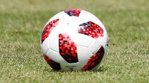
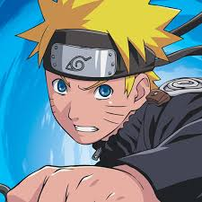

HOBBIES/INTERESTS
- Football:
- Love to watch football.My favourite clubs are Barcelona & Liverpool.
I support Germany and Netherlands in National tournaments.
I also like to play football. I play football as a defender.
- Anime:
- Watched over 30 animes.Favourites include Attack On Titan & Fullmetal Alchemist.
I like there philosophies and analogies. I really like the life lessons we can learn from animes.
Attack on Titan is a story about a young boy who wants freedom from the walls which were built to protect them from monsters called titans.
He wants to go outside and watch the whole world.We follow him in his quest for freedom.
Fullmetal alchemist is a story about two boys losing there mother and then learning alchemy in order to bring back there mother.
But human transmutation is forbidden in alchemy and when they try it they get punished by truth or god.One brother loses his arm and leg and another brother loses his whole body.
There is only one way to get there bodies back and that is by finding the philosophers stone. We follow them on their journey.
- Manga:
- Read about 5-6 mangas. Favourites include Kingdom & Vinland Saga.
Kingdom is a story about two boys who were slaves wanting to be Great Generals from Heaven.But one of them was chosen to be the body double of the prince and loses his life in the process and tells the other to fulfill both of there dreams .Also we follow the prince who fights a political battle against his brother and the prime minister in order to become the king.
Vinland Saga is a historical manga about vikings. It is a story about Thorfinn who undergoes many gruelling experiences at a young and tries to get revenge for his father. But then when he could not get his revenge he becomes empty.When he meets another slave who becomes his friend he becomes rejuvinated and sets out on a journey to find the meaning of TRUE WARRIOR.
- Books:
- I love to read adventure and mystry/detective stories.I love Sherlock Holmes as a series. It is a masterpiece written by Sir Arthur Conan Doyle.Sherlock is a consulting detective who has very high IQ and teaches us the science of deduction.I also enjoyed the books of Harry Potter.It is a story of a young orphan learning of his magical powers and his special existence in the magical society.